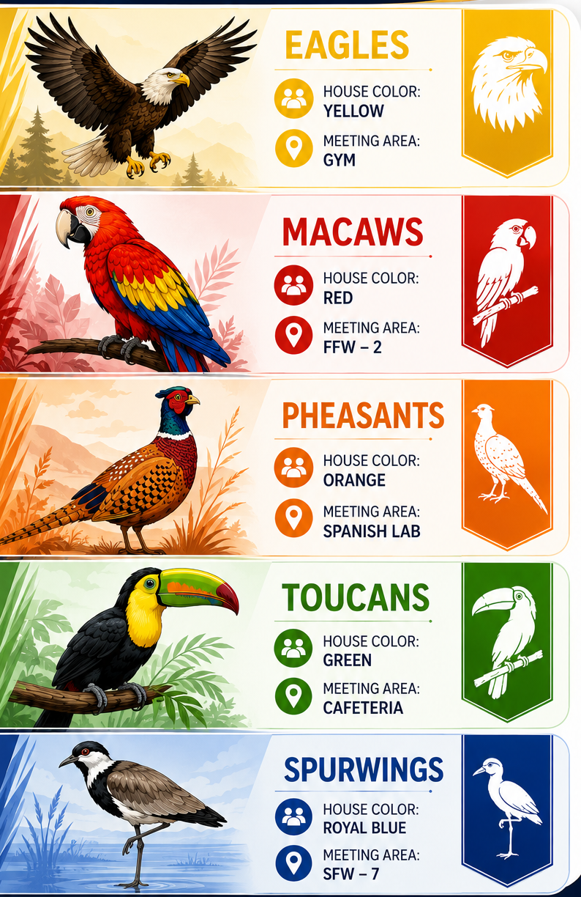

About Our School
Discover the history, identity, values, leadership and educational purpose of New Amsterdam Secondary School.
Welcome to NASS
New Amsterdam Secondary School serves students through a broad programme of academic, technical, vocational and co-curricular education. The school promotes high expectations, disciplined effort, mutual respect and meaningful cooperation.
Our community is guided by the belief that every learner should have access to opportunities that develop knowledge, skills, character and confidence.
The MultiVerse of Opportunities
This identity reflects the school's commitment to providing every student with access to a diverse range of pathways for personal, academic and professional growth.
It represents an educational environment where students are empowered to discover and develop their unique talents, interests and aspirations through academic excellence, technical and vocational education and training, leadership, co-curricular and extra-curricular activities, cultural engagement, community service, entrepreneurship and innovation.
Together, these opportunities prepare students to become well-rounded citizens equipped to succeed in an ever-evolving world.
School Governance
Committed to excellence through strong leadership and responsible governance.
Mr. Rafeek Kassim
Chairman
Board of Governors
Board of Governors
New Amsterdam Secondary School is governed by a Board of Governors which provides strategic leadership, policy direction and oversight for the continued growth and development of the institution.
Working in partnership with the Principal, staff, parents, alumni, the Ministry of Education and the wider community, the Board promotes accountability, innovation and educational excellence.
Through collaborative leadership and responsible governance, the Board remains committed to advancing the school's vision, strengthening the institution and supporting student success.
Members of the current Board of Governors: Mr. Rafeek Kassim (Chairman), Mr.Roy Jafarally, Mr.Jason Phillips, Ms. Charlynn Artiga, Ms.Onawa Harvey, Mr.Tejpaul Adjodha, Mr.Keane Read, Mr.Tamesh Mohabir, Mr.Wahid Omar, Ms.Roshanna Allison, Ms.Devi Lilah, Mr.Bunny Samuels, Ms.Mehali McAlmont, Mrs. Shenelle Jafarally, Ms. Onika Fraser, and Mr. Neruddeen Abzal.
Board of Governors
2026–2028
Brief History
New Amsterdam Secondary School, formerly known as New Amsterdam Multilateral School is a government secondary institution offering a comprehensive multilateral curriculum. The school was opened on 15 September 1975 with an enrolment of 181 students.
The members of the administration were Joyce A. Thomas, Headmistress; Mr. Reuben Dash, Deputy Headmaster; Ms. Beverly Headly, Senior Mistress; and Mr. Michael Rambali, Senior Master. The foundation staff consisted of six teachers, one in each of the following areas: English, Social Studies, Home Economics, Integrated Science, Spanish and Agricultural Science.
On 13 October 1975, a transfer of 550 students took place from Berbice High School to N.A.M.S. By the end of the 1975–1976 school year, the number of students on roll was 861. During the following school year, enrolment increased to 1,015 students.
The school's crest was introduced on 6 February 1976, and its motto, “Progress Through Co-Operation,” was approved on 19 November 1977. The name of the school was changed from New Amsterdam Government Secondary School to New Amsterdam Multilateral School on 1 September 1978.
On 27 January 1979, the school's Parent-Teacher Association was inaugurated under the name New Amsterdam Multilateral School and Community Council. During the late 2010s, the school underwent another name change and became known as New Amsterdam Secondary School – Multilateral.
Mission
New Amsterdam Multilateral School is fully committed to developing the maximum potential of each student through exposure to a wealth of meaningful learning experiences within a pleasant, stimulating and harmonious school environment.
Motto
Progress Through Co-Operation
Advancement is achieved when the entire school community works together.
School's Pledge
I pledge at all times to conduct myself as a responsible student, to adhere to the school's rules, and to work cooperatively with all members of staff and my fellow students in advancing the goals and ideals of New Amsterdam Multilateral School.
School Song
Our dear school we pledge to you
Forever to be so true
Striving always to do so well
Seeking ever to always excel
We all stand to sing our song
With our voices rich and strong
And our hearts are open wide
Filled with dignity and pride
We will work in unity
And will live in harmony
We are ever proud to share
Showing all our love and care
Let us march along the way
Striving for a brighter day
Reaching up to higher goals
As each term and year unfold
Chorus
New Amsterdam Multilateral, to you we sing aloud
New Amsterdam Multilateral, of you we are so proud
New Amsterdam Multilateral, your name ever will be
New Amsterdam Multilateral, so very dear to me
House System
New Amsterdam Secondary School promotes teamwork, leadership, school spirit and healthy competition through its five-house system.

House Colours: